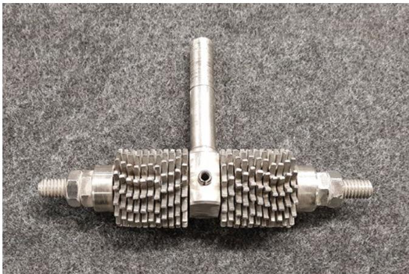
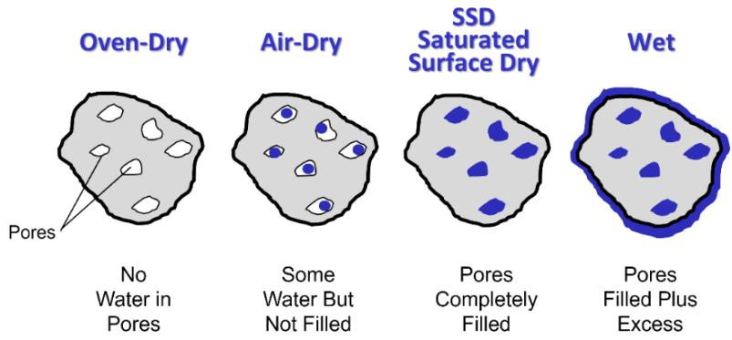
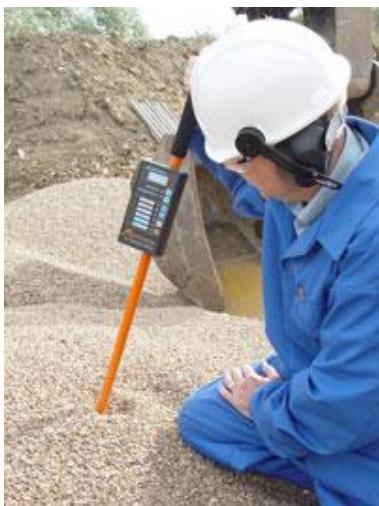

Material Testing
Material testing is the systematic application of controlled forces, deformations, or environmental conditions to a specimen in order to quantify its fundamental physical and mechanical properties such as strength, stiffness, hardness, and durability [1]. Standardized test methods define sample preparation, apparatus configuration, loading procedures, and data interpretation so that results are comparable across laboratories and projects [1]. These procedures allow engineers to diagnose material behavior, assess long-term performance, and guide selection for design and quality control purposes [1] [2].
Sources (3)
Key findings
- Aggregate abrasion tests such as the Los Angeles test do not reliably predict concrete wear resistance, requiring direct evaluation using specific ASTM procedures like C418, C779, C944, or C1138 [2].
- Quality control teams can effectively manage aggregate moisture by combining periodic ASTM C566 laboratory drying tests with frequent handheld microwave-probe sensor readings for instantaneous feedback [3].
- The California Bearing Ratio (CBR) test and the Hveem Resistance Value test serve as empirical methods to gauge the load-bearing capacity or stiffness of unbound soils and aggregates, though neither measures a fundamental soil property [1].
Concrete Durability and Material Testing Methodologies
Material testing involves applying controlled forces or environmental conditions to quantify fundamental properties such as strength, stiffness, and durability [1]. Standardized protocols ensure that results for mechanical wear, physical density, and chemical composition are comparable across different laboratories and projects [1] [2]. Durability assessment often combines abrasion tests to measure surface resistance with microstructural examinations like petrography to identify mineralogical characteristics that influence long-term performance [2].
The following figure illustrates the measurement of splitting tensile strength.
 Splitting tensile strength test setup for a concrete cylinder. [2]
Splitting tensile strength test setup for a concrete cylinder. [2]
The image displays a cylindrical specimen positioned horizontally between the platens of a mechanical testing machine, held within a specialized metal frame. This apparatus configuration is used for splitting tensile strength tests, which involve loading a cylinder axially along a strip on its side until failure occurs to quantify the material’s mechanical properties.
Research problem — Current material-testing practices for concrete lack reliability because widely used aggregate abrasion tests fail to correlate with actual concrete wear resistance, leading to inaccurate durability forecasts and potential structural failures [2]. Petrographic analysis is typically reactive rather than proactive, being employed only after premature failures occur, which prevents engineers from identifying root causes early enough to ensure long-term safety and performance [2].
State of the art — The current state of concrete durability testing is anchored in a suite of long-standing ASTM standards, with the Los Angeles test remaining the prevailing practice for aggregate abrasion despite its weak correlation with actual concrete wear [2]. Modern diagnostic practices increasingly complement mechanical wear assessments with petrographic analysis governed by ASTM C856, which utilizes microscopy to examine mineralogical and chemical characteristics following premature failures [2].
The figure below illustrates the rotating cutter and dressing wheels used in the ASTM C944 abrasion resistance test.

Rotating cutter with dressing wheels for the ASTM C944 abrasion resistance test [2]The image displays a metallic tool assembly consisting of a central vertical shaft and two horizontal cylindrical rollers equipped with abrasive teeth. This apparatus is identified as the rotating cutter used in ASTM C944 to abrade concrete surfaces under load for measuring wear depth or mass loss. The device serves as specific apparatus for material testing by applying controlled mechanical forces to quantify durability properties.
Findings from the reports
- Aggregate abrasion tests such as the Los Angeles test do not reliably predict concrete wear resistance, requiring direct evaluation using specific ASTM procedures like C418, C779, C944, or C1138 [2].
- The California Bearing Ratio (CBR) test and the Hveem Resistance Value test serve as empirical methods to gauge the load-bearing capacity or stiffness of unbound soils and aggregates, though neither measures a fundamental soil property [1].
- The CBR test quantifies resistance by driving a piston into a specimen, producing values that vary significantly based on material type, ranging from low for silts and clays to high for well-graded granular bases [1].
- The Hveem test measures the horizontal pressure generated by a vertical load on a cylindrical specimen to derive an R-value that indicates material stiffness [1].
Novelty & rigor — The research introduces hardware innovations for dynamic cone penetrometers, such as steeper cones and automated hammers, which distinguish the method from traditional manual testing [1]. In contrast, other work simply catalogs established abrasion-resistance procedures and conventional petrographic analysis without presenting distinctive or innovative methods [2].
The following figure illustrates the dynamic cone penetrometer used in these novel testing methods.
 Schematic of a dynamic cone penetrometer showing the hammer, steel rod, and cone assembly with dimensional specifications. [1]
Schematic of a dynamic cone penetrometer showing the hammer, steel rod, and cone assembly with dimensional specifications. [1]
The figure displays a schematic of a dynamic cone penetrometer consisting of a handle, a sliding hammer, a long steel rod, and a conical tip at the bottom. This apparatus is used for measuring in situ strength by driving the cone into soil through repeated impacts from a drop hammer sliding along the shaft. By quantifying the resistance of the material to penetration, this device provides data on mechanical properties such as strength and stiffness.
Reported values
| Parameter | Value | Context | Source |
|---|---|---|---|
| CBR value (granular bases) | 50 to 70 | granular bases and high-quality crushed stones | [1] |
| CBR value (silts and clays) | 2 to 8 | silts and clays | [1] |
| penetration rate | 0.05 in. per minute | CBR test standard rate | [1] |
| piston end area | 3 in2 | CBR test piston | [1] |
Across the reviewed reports, material testing methodologies for concrete and unbound aggregates are characterized by empirical procedures that measure specific performance indicators rather than fundamental intrinsic properties. While abrasion assessments for concrete utilize distinct physical simulations such as air-driven sand or rotating cutters to quantify wear depth and volume loss, soil stiffness evaluations rely on penetration resistance or horizontal pressure measurements that vary significantly with material composition. Both domains demonstrate a reliance on standardized empirical tests to gauge functional durability and load-bearing capacity, acknowledging that these methods serve as practical proxies for performance rather than direct measurements of underlying material science principles. [1] [2]
Implications — Specifications for concrete durability against abrasion should mandate direct testing of hardened concrete using standardized methods rather than relying solely on aggregate-only indices, which do not reliably predict in-service performance [2]. Engineers must exercise caution when interpreting empirical pavement test results and recognize their limited predictive power for long-term performance, supplementing them with fundamental material testing for critical design decisions [1].
Limitations — The Los Angeles abrasion test does not reliably predict the actual wear resistance of concrete made from the tested aggregates, limiting its utility for durability assessments [2]. Empirical tests such as the California Bearing Ratio and Hveem R-value do not measure fundamental soil properties and are highly sensitive to variations in specimen preparation [1].
The following figure illustrates how compressive strength and aggregate type influence the abrasion resistance of concrete in accordance with ASTM C1138.
 Effect of compressive strength and aggregate type on the abrasion resistance of concrete using ASTM C1138 [2]
Effect of compressive strength and aggregate type on the abrasion resistance of concrete using ASTM C1138 [2]
The figure plots abrasion-erosion loss as a percentage by mass against compressive strength in MPa for four different aggregate types: limestone, quartzite, traprock, and chert. The data demonstrates that abrasion resistance improves (lower loss) as concrete compressive strength increases, a relationship described in the source context as ‘Strong concrete has more resistance to abrasion than does weak concrete’. The chart further illustrates that aggregate type significantly influences durability, showing that harder aggregates like chert and traprock exhibit lower erosion loss compared to softer limestone at equivalent strength levels.
Evidence: 2 reports (2 primary)
Aggregate Moisture Characterization
Aggregate moisture characterization involves quantifying the water content within construction aggregates through standardized testing procedures [3]. Laboratory methods typically determine this value by heating a sample to evaporate the water and measuring the resulting weight loss, whereas portable devices utilize microwave energy for rapid on-site assessments [3].
The following figure illustrates typical moisture conditions found in aggregates.

Moisture conditions of aggregate (ACPA 2015). [3]The figure illustrates four distinct moisture states of an aggregate particle: Oven-Dry, Air-Dry, Saturated Surface Dry (SSD), and Wet. It visually depicts the progression of water filling internal pores while maintaining a dry surface in the SSD state, which is the condition assumed for concrete mixture designs to ensure accurate batching proportions.
Research problem — Standard testing methods are insufficient for capturing the rapid variability in aggregate moisture caused by weather and stockpile position, as they cannot be performed frequently enough to provide timely data [3]. There is a need for more frequent and accurate moisture monitoring techniques that can inform real-time concrete mix adjustments to maintain consistent pavement quality [3].
State of the art — The current best practice for monitoring aggregate moisture in airport pavement construction combines the laboratory ASTM C566 drying method with rapid handheld microwave probes [3]. While the ASTM C566 test provides accurate quantitative data by measuring weight loss after heating, it is typically run twice daily or after stockpile replenishment to capture trends over time [3]. Handheld microwave sensors offer instantaneous percentage-of-dry-weight readings for real-time monitoring, though their reliability depends on consistent technique and averaging multiple readings across the pile [3].
Findings from the reports
- Evaluated the effectiveness of pairing ASTM C566 laboratory drying tests with handheld microwave-probe sensors to control aggregate moisture, noting that microwave probes provide instantaneous percentage readings while ASTM C566 offers a standardized weight-loss measurement [3].
Novelty & rigor — The novelty lies in integrating conventional laboratory moisture testing with rapid microwave drying and real-time handheld sensor measurements to enable both scheduled and continuous monitoring of aggregate moisture shifts [3]. Reproducibility is established by standardizing sample collection, adhering to specific heating protocols for weight loss calculation, and defining a consistent procedure for averaging multiple handheld sensor insertions across the stockpile [3].
The following figure illustrates the handheld moisture sensor probe used for these real-time measurements.

Handheld moisture sensor probe (source: KSE Testing Equipment). [3]The image shows a worker in blue coveralls and a white hard hat kneeling on the ground while operating a handheld device with an orange probe inserted into a pile of granular material. This apparatus is identified as a handheld moisture sensor that uses microwave and microprocessor technology to measure moisture content in aggregates, providing instantaneous results for quality control purposes. The testing is relatively simple, and the operator must simply insert the probe’s sensor prongs into the material being tested.
Implications — Concrete production should implement a dual-monitoring strategy that pairs the accuracy of standardized oven-drying methods with the speed of handheld probes to effectively manage moisture variability [3]. To ensure mix consistency, operators must establish baseline trends through frequent standardized testing after stockpile changes while using rapid spot checks for continuous verification during shifts [3]. Plant foremen require immediate access to averaged moisture data from multiple probe readings to enable timely adjustments to concrete mix designs in response to environmental and stockpile fluctuations [3].
Limitations — Standard oven-drying methods may lack sufficient frequency to capture rapid moisture fluctuations caused by weather or stockpile variations [3]. Handheld microwave probes require strict procedural adherence and multiple averaged readings to ensure reliability, as deviations can lead to inaccurate results [3]. Both testing approaches risk compromising measurement integrity if the aggregate is overheated or physically damaged during handling [3].
Evidence: 1 report (1 primary)
Related concepts
In this hierarchy
- Parent: Material Testing
- Sibling: Concrete Durability
- Sibling: Concrete Standards
- Sibling: Concrete Strength
- Sibling: Concrete Testing
- Sibling: Maturity Methods
Related by shared evidence
- Aggregate Management — shares 3 reports
- Cement Chemistry — shares 3 reports
- Cementitious Materials — shares 3 reports
- Concrete Mixture Design — shares 3 reports
- Concrete Production — shares 3 reports
- Concrete Strength — shares 3 reports
- Concrete Testing — shares 3 reports
- Cracking Mitigation — shares 3 reports
Similar topics
- Material Testing
- Concrete Strength
- Concrete Testing
- Concrete Strength
- Concrete Standards
- Maturity Methods
- Quality Control
- Concrete Durability
Source coverage
| Source | Concrete Durability and Material Testing Methodologies | Aggregate Moisture Characterization |
|---|---|---|
| [1] | ✓ | |
| [2] | ✓ | |
| [3] | ✓ |
References
- Concrete Pavement Preservation Guide (Third Edition) (2022)
- Integrated Materials and Construction Practices for Concrete Pavement: A STATE-OF-THE-PRACTICE MANUAL (2019)
- Best Practices Manual: Quality Control and Quality Acceptance of Concrete Airport Pavement (2025)
Feedback on this page